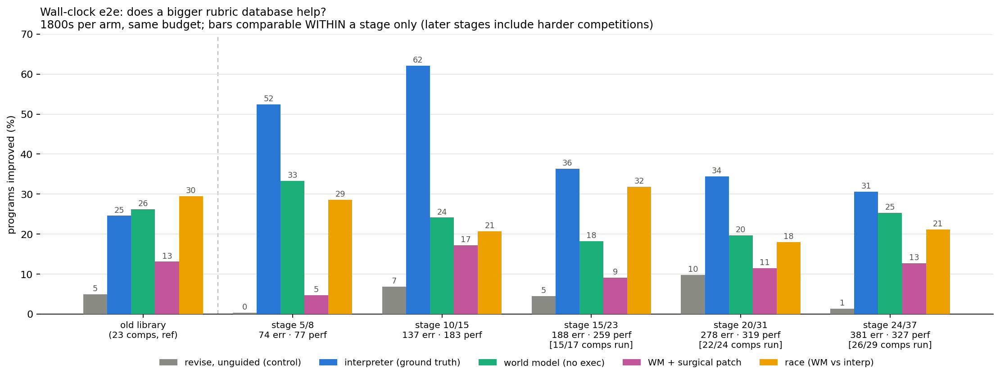
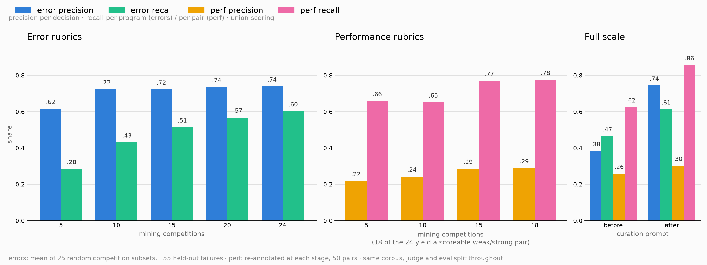

MLE-bench, KernelBench and SWE-bench are fully held out; rubrics are mined only from external datasets. What is measured, what is built, what is next.
MLE-bench is the reference protocol. An agent receives a Kaggle competition's public
data and description and must produce a submission.csv; that file is scored by
the competition's own metric against a held-out private split, and the score is placed on
the competition's real historical leaderboard. The headline number is medal rate —
the share of competitions clearing the actual bronze, silver or gold thresholds, which are
set as leaderboard percentiles so a medal means comparable achievement whether a
competition drew 200 entrants or 5,000. Above-median rate is the usual secondary figure.
Attempts run under a fixed wall-clock and hardware budget with no internet access, and
because agent variance is large, results are reported over multiple seeds as pass@1 or
pass@k: the strongest published setup, o1-preview with AIDE scaffolding, earns bronze or
better in 16.9% of competitions at pass@1 and 34.1% at pass@8. Grading is always done by
the released grader rather than a re-implementation, and a 22-competition "Lite" split
exists for cheaper runs. Contamination is an acknowledged weakness, since the competitions
predate current model cutoffs.
mlebench.grade_csv), bundled medal thresholds, and split filesThree disciplines, each with one benchmark held out for evaluation and the rest used only for mining. Mining counts are after the leakage filter, which removed nine exact MLE-bench competitions sitting inside DSBench and MLAgentBench, two hundred constant-perturbed KernelBench copies inside robust-kbench, and flask and sympy inside SWE-smith's own repo profiles.
| discipline | benchmark | tasks | role | task source |
|---|---|---|---|---|
| ML engineering & data science |
MLE-bench | 75 | held out | human · Kaggle |
| DA-Code | 500 | mining | human | |
| InfiAgent-DABench | 257 | mining | human CSVs · synthetic questions | |
| DSBench | 66 | mining | human · Kaggle, re-split | |
| MLGym | 19 | mining | human | |
| MLAgentBench | 14 | mining | human | |
| RE-Bench | 7 | mining | human · expert-authored | |
| GPU kernels | KernelBench | 270 | held out | human |
| TritonBench | 55 | mining | human | |
| FastKernels | 47 | mining | human · production archs | |
| GPU MODE reference-kernels | 42 | mining | human · competition | |
| BackendBench | 26 | mining | human · PyTorch aten ops | |
| robust-kbench | 11 | mining | human | |
| Software engineering | SWE-bench | 12 repos | held out | human · real issues |
| SWE-smith | 131 repos | mining | synthetic · LM-injected bugs | |
| SWE-Gym | 11 repos | mining | human · real issues/PRs |
1,176 mining units in total. Everything is human-authored except SWE-smith, the one large synthetic block, which matters because LM-injected bugs need not resemble real failure modes. Held-out sizes are the published figures; mining counts are our own enumeration of each repository at a pinned commit and can differ from a paper's headline number, since a paper may count individual operators or questions where the repo ships grouped suites. SWE rows are repositories, each yielding many task instances at collection time. Full inventory as an image →
These rubrics were mined from MLE-bench competitions, so this run is in-distribution: the mining and eval competitions are disjoint, but both come from MLE-bench. It is a check that the end-to-end loop runs and is measurable, not a held-out result.

Last Saturday's end-to-end run, using the rubrics presented that day, finished two days ago. We are lagging slightly behind interpreter-only, controlling for wall clock so every arm gets 30 minutes. The higher numbers in the earlier stages are mainly an artifact of having fewer eval tasks there, so the percentage shifts easily with run-to-run noise.
The x-axis groups runs by rubric-database size, each group showing the five arms. The y-axis is improvement rate: the percent of attempts where the final code scored better than the seed starting program, an existing MLE-bench code trace shared by all runs. MLE-bench officially reports medal rate — how many competitions the agent's submission clears the Kaggle leaderboard's bronze, silver or gold thresholds — but our 30-minute runs do not score enough medals on the smaller split to measure improvement, so improvement rate is the better gauge of whether the end-to-end loop is working. For the full run, once MLE-bench is completely held out, we can use medal rate and the official metrics.
These rubrics are also mined from MLE-bench competitions, so they are in-distribution in the same sense as the section above.
After these end-to-end results, William and I looked through the traces from the run and found coverage issues coming from the prompts and the generation pipeline. William improved the pipeline by asking the rubric-generation model to focus on coverage and by adding filtering steps, which gave much higher P/R. Below is the new rubric database's P/R. We are currently running an end-to-end experiment on these updated, better-coverage rubrics. Even with the better generation, the performance rubrics appear saturated.

| regime | error / pod-hr | perf / pod-hr | combined |
|---|---|---|---|
| MLE-bench (3600 s cap, ≤40 programs) | 1.0 | 3.5 | 4.5 |
| External (DSBench + kernels, 900 s cap, ≤8 programs) | 20.0 | 42.9 | 63.0 |
| component | seconds | share of wall |
|---|---|---|
| GPU execution of candidate programs | 140,674 | 94% |
| LLM generation + curation + overhead | 8,884 | 6% |
Curation is not the bottleneck — execution is. Median 267 s of GPU time per program and 302 s per rubric, but spread over two orders of magnitude:
| competition | GPU s / rubric | rubrics |
|---|---|---|
| random-acts-of-pizza | 26 | 22 |
| statoil-iceberg | 54 | 30 |
| stanford-covid-vaccine | 302 | 36 |
| dog-breed-identification | 1,116 | 22 |
| nyc-taxi-fare | 1,755 | 18 |
| vesuvius-ink-detection | 3,811 | 8 |
Four of eleven runs (AI4Code, osic, uw-madison, vesuvius) spent 34,787 GPU-seconds for zero performance rubrics: no program was graded twice, so no better/worse pair exists. 27 runs were launched, 11 banked a summary, none reached its rubric target.
| lever | effect | basis |
|---|---|---|
| Re-mine the 3,355 already-executed states on disk | ~20–50× | costs only the 6% slice; 1,431 error states, 802 graded, corpus not exhausted |
| Mine external tasks instead of MLE-bench | 14× | 63.0 vs 4.5 rubrics/pod-hr, measured |
| Cap mining execution (~300 s + subsampling) | ~10× | crashes surface at a median 11 s; needs a fidelity check for perf pairs |
| Abandon a competition with no graded pair after N min | reclaims 23% | 34,787 of 149,558 s produced no perf rubric |
| Cross-program perf pairs instead of hill-climbing | removes 1 run/turn | 802 graded states already exist; weaker evidence, needs measuring |
| More pods | linear | one competition per pod |
Curate 1,000 rubrics distributed uniformly over all thirteen mining datasets and evaluate, producing a scaling-law figure with rubric count on the x-axis and end-to-end accuracy on the y-axis, plus companion panels for error and performance precision and recall. Two things this run has to do that the current experiment cannot: hold the eval set fixed across rubric counts, since the present design varies library size and task difficulty together and so has no real scaling axis; and capture medal rate and above-median, which the harness computes but which were missing from the stage campaign because the medal fields postdate that code snapshot and the per-attempt rows were dropped by an artifact-glob bug. Both are fixed, so a rerun yields the metric comparable to published MLE-bench numbers.
Collection now runs end to end on the external domains, verified on DSBench (five and
four performance rubrics on two tasks) and on kernels (six), with error rubrics in both.
The next step is to collect rubrics from the other sources in the table above — DA-Code, InfiAgent-DABench, DSBench, MLGym, MLAgentBench, RE-Bench, TritonBench, FastKernels, GPU MODE reference-kernels, BackendBench, SWE-Gym and SWE-smith — and then run end-to-end on those, building rubric_db_mle,
rubric_db_kernel and rubric_db_swe; audit each database with
build_domain_db.py, which traces every rubric to its source task and fails the
build on a held-out origin; then evaluate on the fully held-out benchmarks, giving
leaderboard-honest numbers for the first time. Two gaps to settle first are measurement
decisions rather than plumbing: kernel and SWE failures surface inside the grader rather
than the interpreter, so error-rubric yield in those domains is currently limited to
script-level defects, and SWE error truth needs extending from exception class to
failing-test identity.
{kind=link}